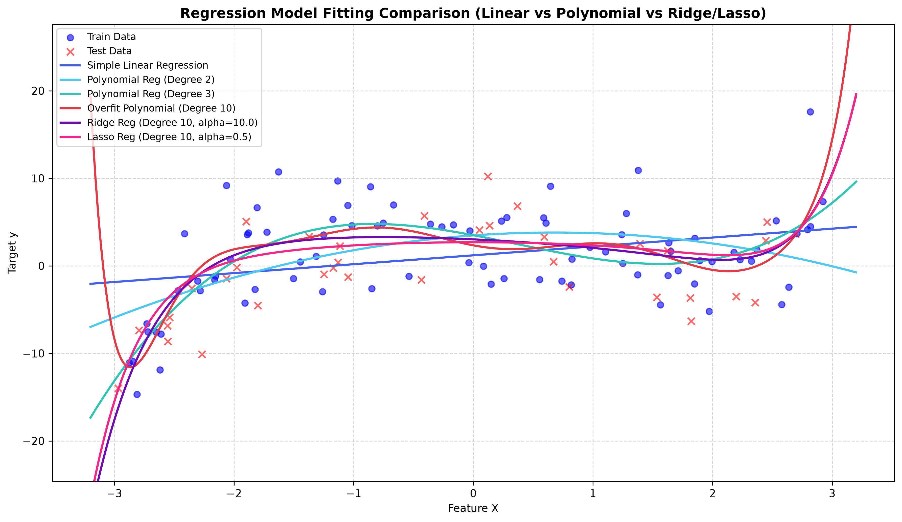
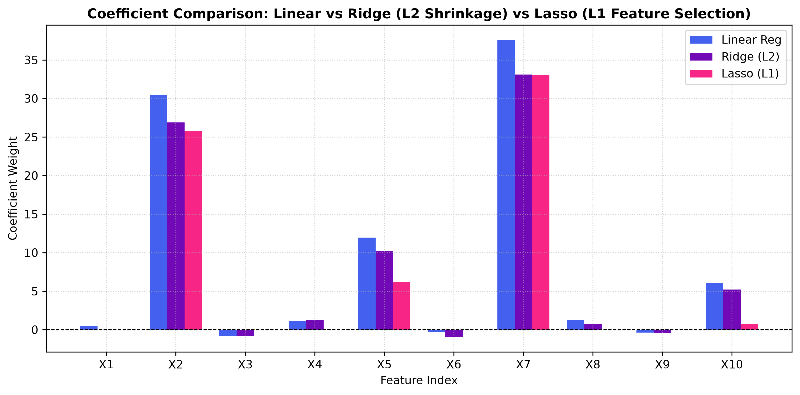
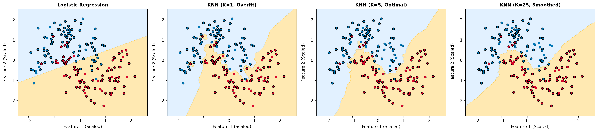
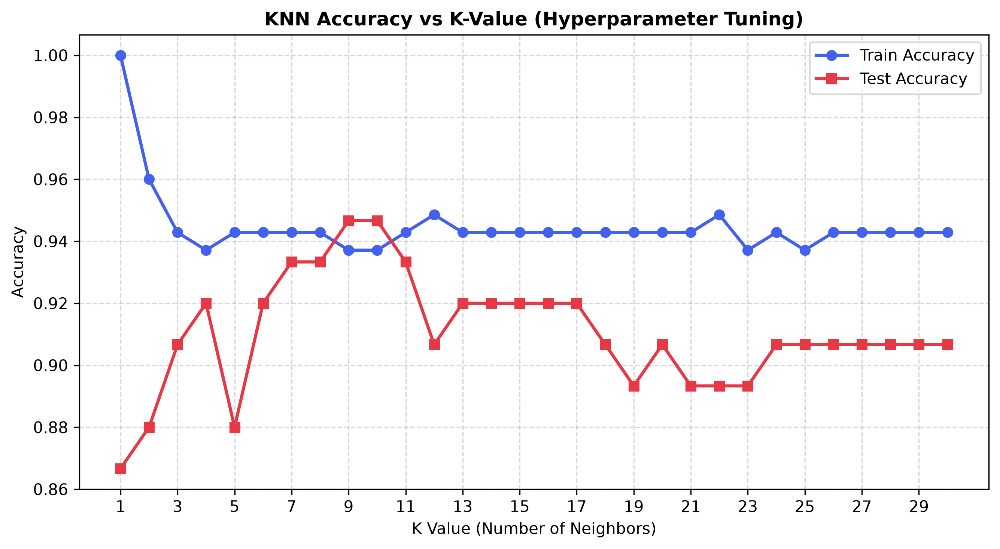
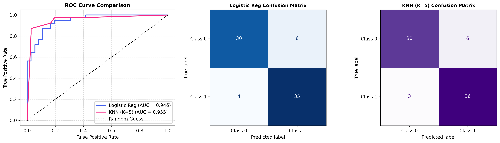

Model Fitting Visualization
Linear • Polynomial • Ridge • LassoDecision Boundaries & 2D Space
Logistic Regression vs KNNPython Pipeline Execution Results
Summary tables exported directly from model training in src/regression.py and src/classification.py.
Regression Performance
Loading metric tables...
Classification Performance
Loading metric tables...
Diagnostic Plots Gallery
Regression Model Comparison

Ridge vs Lasso Shrinkage

Classification Decision Boundaries

KNN Hyperparameter K Elbow Plot

ROC Curves & Confusion Matrices
